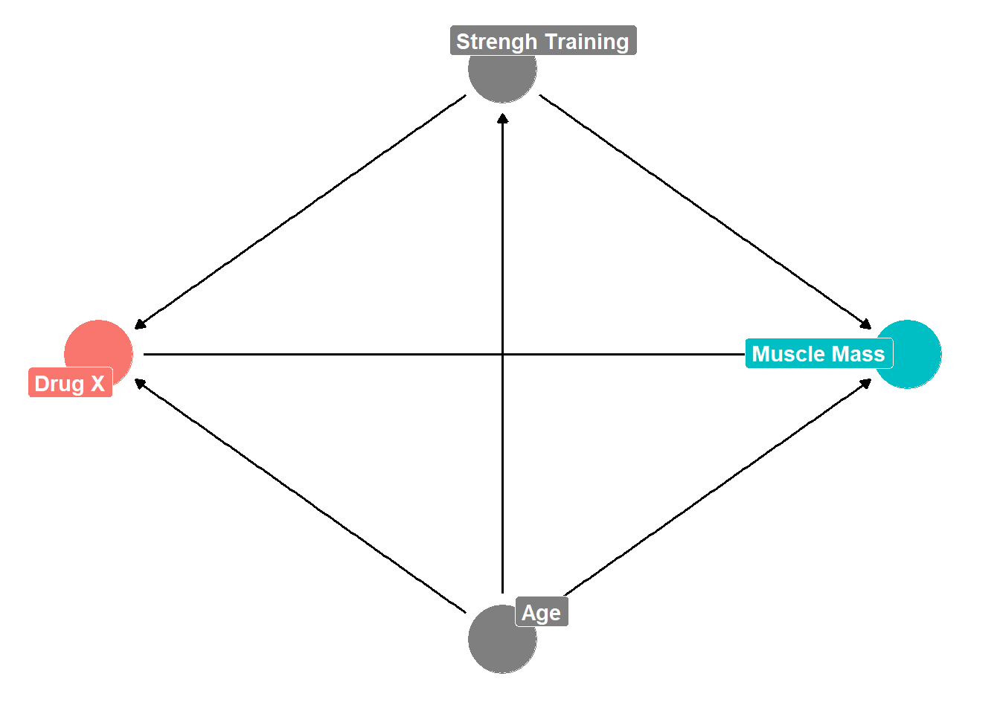

An introduction to the world of causal inference for the casual, curious reader.
Author
Brian Lookabaugh
Published
February 11, 2023
The State of Science
“Science” and scientific articles are often used in a variety of contexts to prove a point. Perhaps you are arguing with your uncle at the Thanksgiving dinner table over the effectiveness of government welfare programs and cite an academic article to prove your point. Perhaps you have seen a talk show personality on a cable news network cite a “recent study” that somehow “proves” a relationship between two variables that happens to align with the ideological character of said news network. Maybe you’ve cited a study or two in a paper for college on a topic that interested you to support your point. It often feels that our claims are more authoritative when we add some citations in parentheses to the end of our sentences, ex. “(Smith 2010, Williamson and Baker 2013)”.
As it turns out, most scientific articles do not accomplish what the layman thinks they do. For someone on the outside looking, science is all about “proving” things. “They have actually proven that X causes Y to happen”. (That is, the average person thinks that most science engages in “causal inference”, the process through which researchers are able to isolate the specific effect that a certain variable (X) has on a certain outcome (Y)). I have heard these phrases from a variety of people I know in my personal life more times than I can count. I am not sure who “they” is, but I am willing to bet that “their” study likely did nothing more than establish a potentially fragile correlation and estimated relationship between two variables. This is far from “proving” that some variable (X) causes some change in another variable (Y).
Okay, where on earth is all of this pessimism coming from? A lot of it actually comes from a simple phrase that you may have heard before, especially if you have taken an Intro to Statistics course. “Correlation does not imply causation”. This phrase frustrates me for many reasons, although, there is a lot of truth in it. For one, many people will use this statement without considering the fact that sometimes, correlation is indicative of causation. Rain and plant growth are correlated, and we also know that this correlation is driven by a causal effect since rain → plant growth. In other cases, the exact opposite occurs. Humans are all too eager to assume that correlation implies causation. Roosters crowing and the sunrise are certainly correlated, but the rooster crowing obviously does not imply that the rooster’s crow → sunrise.
The example with the rooster and the sunrise seems way too obvious. Common sense should tell us that the rooster’s crow obviously does not cause the sun to rise. Why get worked up over such a trivial thing? Let’s think about something a bit more complicated. Let’s say we observe that consumers of diet sodas (Diet Dr. Pepper, because Dr. Pepper is better than Coke) are more likely to experience health problems. That is, Diet Dr. Pepper consumption and health problems are correlated. We could assume that the relationship is causal. That is: Diet Dr. Pepper consumption → health issues. As one drinks more Diet Dr. Pepper, one’s risk of health issues increase. Should we interpret this causally? No! And here is where we get to the other big issue with relying on correlation.
There is likely a confounding effect (several, really) complicating the potential of a causal relationship between Diet Dr. Pepper consumption and health issues. I can think of one right off the bat. Individuals who already have pre-existing health issues may be more motivated to “clean up” their dietary habits and switch to a healthier “diet” alternative. In addition, individuals with pre-existing health issues are, intuitively, more likely to experience health issues. So, the relationship looks like this:
Confounders (variables that are assumed to have a causal impact on both the treatment - in this case, Diet Dr. Pepper consumption - and outcome - in this case, health status) are inconvenient truths that make use unable to interpret correlations as causal effects. We cannot be sure that any change in the outcome (health) is due to the treatment (Diet Dr. Pepper consumption) or the confounder (pre-existing health). Given that we know pre-existing health is a confounder, can we say that Diet Dr. Pepper consumption causes deterioration in health conditions? Without careful thinking and the right tools, no, we cannot. At best, we can see if Diet Dr. Pepper consumption and health are still correlated after adjusting for pre-existing health. As you can imagine, the real world is much more complex than the presence of just one confounder and this issue quickly compounds. Regardless of how “math-y” the study seems that you’re citing to win the argument at the dinner table, we can never be sure that a hidden, unknown confounder is not hiding beneath the surface (for the most part… we’ll get to that in a second). We could identify ten confounders that complicate the causal relationship between Diet Dr. Pepper consumption and health status and still not be entirely sure whether an 11th confounder is going unnoticed. Given that scholars understand that there is no way to know if a unobserved confounder is present, most have opted to settle for correlations and abandon the pursuit of causal inference entirely. What a bummer. Isn’t science supposed to be much more powerful than this?
The Promise and Pitfalls of the RCT
There is an alternative, however. And this alternative is a big reason for why we probably can trust science when it comes to crucial information like whether a certain medication works. The randomized controlled trial (RCT) is oftentimes viewed as the “gold standard” of scientific research. Given what I explained earlier, you may be shocked to learn that RCTs, when executed correctly, can move beyond correlation and establish causality.
How? What about the constant threat of the infamous unobserved confounder? Let’s set the stage to understand how this works. Let’s pretend that you and I are researchers setting out to understand if a certain drug, Drug X (the treatment), causes an increase in muscle mass (the outcome). We can do two things. For one, we can ignore the FDA and release this drug to the public and track information on who buys the drug, individuals who do not buy the drug, and their subsequent muscle masses after taking/not taking the drug. We can then observe that users of Drug X had higher muscle growth than those who did not take Drug X. Causal effect, right? Nope. Let’s draw another DAG (a directed acyclic graph… you saw one earlier and we will go into much greater detail in following blog posts) and quickly point out some confounders
Code
dag2 <-dagify(muscle ~ drugx + age + s_train, drugx ~ age + s_train, s_train ~ age,exposure ="drugx",outcome ="muscle",coords =list(x =c(muscle =5, drugx =1, age =3, s_train =3),y =c(muscle =3, drugx =3, age =1, s_train =5)),labels =c(muscle ="Muscle Mass",drugx ="Drug X",age ="Age",s_train ="Strengh Training"))tidy_dag2 <- dag2 %>%tidy_dagitty() %>%node_status()ggplot(tidy_dag2, aes(x = x, y = y, xend = xend, yend = yend)) +theme_dag() +geom_dag_edges() +geom_dag_point(aes(color = status)) +geom_dag_label_repel(aes(label = label, fill = status),color ="white", fontface ="bold") +guides(color ="none", fill ="none")

If we let anyone choose whether they would like to take Drug X, we are introducing all sorts of problems. I noted two of these problems in the DAG, but you can probably think of more. First, individuals who are already committed to muscle mass through a strength training routine will likely have higher muscle mass and may be more willing to take a novel muscle-growth drug. Second, younger people are more likely to engage in a strength training routine and may be more willing to consume a novel drug due to a lack of prior medications and potential complications with mixing prior medication and Drug X. Further, youth provides the added benefit of natural muscle growth. With just two confounders outlined, we are back to Step 1, again.
And this is why we prefer the second option, the RCT. It turns out that if we don’t let people choose if they are receiving treatment, we magically (poof) eliminate confounding effects. We still need voluntary participants, however, so let’s say we recruit 1,200 individuals to participate in our study. Following this, we randomly assign who gets Drug X and who gets the placebo (these individuals serve as the control group who do not get treatment). It is important to not overlook what just happened in this sentence. If we randomly assign who gets access to the treatment, then no other variable can be correlated with treatment. Older and younger people will be equally represented in the treated and control groups because what determined their status as treated or control came down to the equivalent of a coin flip. For the same reason, strength trainers and couch potatoes will be equally represented in the treated and control groups. Theoretically, any confounder (known or unknown) will have equal representation in the treated and control groups. In the updated DAG below, here is what we’ve done with randomization:
By definition, nothing is correlated with chance since… it’s chance. Remember that confounders need to be causally linked to treatment and outcome. We got rid of the causal link to treatment part, so we have successfully eliminated all confounding effects. While impressive, the RCT has a very noticeable drawback. It is very difficult to implement. Not all research questions are those where it is feasible or ethical to conduct an RCT. Let’s take my personal research interest as an example, the study of conflict management. Many scholars and policymakers have argued that foreign aid, for example, is a positive force to assist countries recovering from war. Think about whether we could use an RCT here. On the practicality front, the answer is no. No government is going to allow me to randomly assign billion-dollar foreign aid packages to various countries. Now let’s consider the ethical problem. Even if governments would allow me to do so, it is hardly ethical to randomly assign potentially life-saving aid. At best, in these situations and many others, researchers merely observe who gets access to treatment (with observational data) rather than assigning who gets treatment (with experimental data).
The Causal Revolution
Barring an ability to assign treatment, it seems that we’re back to Step 1 again. Time to settle for correlation when all we have is observational data? Many scholars have, and continue to do so, at this point. Lucky for most researchers, a surprisingly under-the-radar movement and set of scientific contributions known as the “Causal Revolution” has been brewing over the past couple of decades and its insights and capacities are starting to become widely known in academia and data science.
I won’t get too much into the weeds in this blog post concerning the innovations of the Causal Revolution (there are many), but I would summarize the contributions of the Causal Revolution for causal inference with observational data into four topics. Those nifty DAGs I have shown throughout this blog are extremely valuable for visualizing and specifying confounding (and other) effects. As the research question grows in complexity, so does the DAG and it is very helpful to use DAGs to isolate a variety of causal effects. Second, the Causal Revolution has supplied researchers with an entire causal language that was previously unspoken. As these blog posts continue, you will see all sorts of examples of this new lexicon including: confounders, mediators, colliders, direct effects, indirect effects, various treatment effects, etc. Third, a variety of methods have been developed and refined to estimate causal effects (of which a large portion of blog posts in this series will be concerned with). Lastly, scholars have developed and implemented a crucial type of analysis called “sensitivity analysis” that evaluates the impact of those pesky potentially unobserved confounders (again, we will talk about this in later blog posts).
At the very beginning of this series, it is hard to emphasize the monumental importance of these innovations. I think a helpful way of understanding the impact of the Causal Revolution is to compare the state of scientific output now compared to what it was twenty years ago. Two decades ago, language of “causality”, “causal effects”, and even the word “cause” were shunned in many domains where RCTs were not an option. Even when I started graduate school in 2018, the same norm persisted in my department. No language or methods existed to support the leap from correlation to causation. Scholars relied on correlations as a way of assessing the impact of their findings, going right up to the line of interpreting their correlative findings as causal, despite no methods existing to support that leap. Twenty years later, an abundance of methods and innovations support scholars who are now answering questions that researchers, policymakers, and the average individual are interested in. For many areas of study, science is finally capable of answering the questions we have been interested in all along.
Potential Outcomes
Okay, really quick (but very important) side note here. Have you noticed that I haven’t really discussed what causality is or how to evaluate it? We all have a general understanding of causality (if I throw a ball, that movement will cause the ball to move in the direction I threw it), but if we’re going to be all science-y and specific about it, we should consider what we’re actually talking about when we causation.
Judea Pearl, an instrumental figure (probably the instrumental figure) in the Causal Revolution blatantly avoided precisely defining causality in his fairly-laymen-friendly book, “The Book of Why”. If he avoided providing a precise definition, then who am I to fill in that gap? Rather than giving you a specific definition, I think a general framework is more fruitful for comprehending what causality implies.
Whether we realize it or not, humans tend to think about causality in terms of counterfactuals (things that didn’t happen, but could have). Think about it. If you get pulled over by a cop for speeding, you understand that, in an alternative world where you were not speeding on that specific highway on that specific day, you probably would not have been pulled over. So, you understand that speeding has a causal effect on the risk of being pulled over by the police. You understand this because you contrast the real world with a counterfactual world where everything else was the same, but you were not speeding. It’s actually that simple. The causal effect of speeding on being pulled over is merely the difference between the real world in which you sped contrasted with the alternative world in which you were not speeding. Any time I mention a causal effect, it is very helpful to think about what that means in this potential outcomes framework.
You might be wondering, “that concept makes sense theoretically, but it is practically impossible.” This is correct. We cannot simulate the exact same day for you where the only difference is that you do not speed and compare that to the real world where you have to deal with a speeding ticket. This realization is known as “the fundamental problem of causal inference”. If we had time machines, this wouldn’t be a problem at all. We just go back in time and tell you not to speed on the day where you were pulled over in the original timeline. But we don’t have time machines. So why care about this framework? Is causal inference even possible? Yes, it is. And we will touch up on this issue and how researchers overcome it in later blog posts discussing treatment effects.
In the following blog post, we will take a deeper look into directed acyclic graphs (DAGs), beginning with why they have such a complicated name despite being an incredibly intuitive tool. We will look at their effectiveness in identifying a variety of effects (and discuss why identifying these respective effects is important), and review the concept of adjustment. Before we collect any data or implement a particular method, it is important to understand that causal inference starts with setting aside time to carefully consider causal relationships within a research question. This is why understanding DAGs and visualizing theoretical causal relationships is so important. If we fail to get this part right, then we cannot assign much confidence to the following steps.
Recommended Materials
For those of you reading this who have a legitimate interest in causal inference and want to know more, I could not recommend the resources below more:
Program Evaluation Course Provided by Dr. Andrew Heiss: I am putting this at the top of the list for a reason. Dr. Heiss’s course is comprehensive, easy to digest for those who do not come from a strong technical background, and aesthetically pleasing. While it may take some time, I highly suggest taking this entire course. Dr. Heiss also has a lot of valuable information on his blog and GitHUb.
The Effect: A fantastic and comprehensive book that covers so much and is so beginner-friendly. As an added plus, this book also provides code for the implementation of methods via R, Python, and Stata. (Plus its free).
Causal Inference: The Mixtape: Another great book that provides very heplful beginner information relating to causal inference. (Also free).
Rohrer (2018): Reading this article was my first time being exposed to DAGs and the issue of confounding. It is incredibly concise and easy to understand and it is an easy starting point.